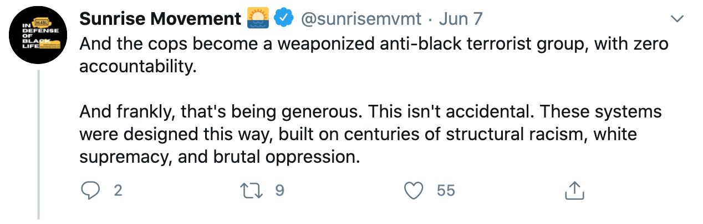

june 9, 2020
To my Sunrise friends,
I've met so many thoughtful, loving, and talented young people through our Portland hub. Sunrise gives me hope that we can include everyone in the radical changes we need to stop climate change. But I disagree with our position on defunding police and some Sunrisers' support of riots enough that I can't continue participating in this movement.
I work in the criminal justice system and I'm black so I think I have a unique perspective. I also haven't been super engaged with Sunrise the past few months so definitely take my criticism with a grain of salt.
On Sunday Sunrise National posted a Twitter thread explaining why we should #DefundThePolice. Basically it's saying we can maintain public safety without risking police violence by diverting funding from police to social services and non-police first responders.
I'm all for trying programs like Portland Street Response, and having social workers do social work instead of cops as much as is possible. Most cops don't want to be social workers anyway. But defunding police as a first step toward this is a bad idea for a number of reasons, many of them outlined in this Vox article from last year.
First, police are really popular. I understand that movements are about shaping political reality more than responding to the poll of the day. But just before George Floyd's protests 78% of Americans expressed a great deal or a fair amount of confidence in the police, including 56% of black Americans. Last January, 60% of black Americans supported increasing police budgets and hiring more police officers in high crime areas. The protests may have shifted things, but this is still a violent country where the police make many people feel safe.
Rhetoric like this doesn't capture how most black people feel about the police:
Second, once a movement forces dramatic changes in policing it becomes responsible for the crime rate. Eliminating PPB's Gun Violence Reduction Team while shootings are on the rise as several city commissioners are proposing seems like courting political disaster. This doesn't mean we shouldn't ever change things because we're scared it might increase crime. It means we should be careful about how we talk about it and have concrete alternatives to policing—#DefundThePolice is doing neither.
Third, while black and brown communities face tons of petty harassment from police, serious crimes are under-investigated and under-policed. Jill Leovy writes beautifully about this in her book Ghettoside: “Like the schoolyard bully, our criminal justice system harasses people on small pretexts but is exposed as a coward before murder. It hauls masses of black men through its machinery but fails to protect them from bodily injury and death. It is at once oppressive and inadequate.” Defunding the police without building an investigative body that works fairly and responsively in minority communities does a huge disservice to black and brown crime victims.
I haven't heard good alternatives to the police for gang shootings, armed robberies, and other serious crimes. Investing in social services to prevent these sort of things is like building a fire station to put out a fire. These programs are badly needed, but they take time to yield benefits, and the crime is here right now.
Lastly, overworked police officers have more use-of-force incidents. I don't want to be pulled over by a tired cop on the thirteenth hour of their shift because PPB had their funding cut.
In many ways Sunrise is a response to white environmental groups that have failed to center frontline communities in their thinking about the climate crisis. While many white people are naive or dismissive about racism, the people I've met in Sunrise are emphatically not. I love that we're always thinking about the most vulnerable communities. But the fact that we're a mostly white hub leads to some uncomfortable dynamics.
For example, our nonviolence principle doesn't align with how some people responded to George Floyd's killing. Kimberly Johnson has this powerful speech about the legitimacy of rioting and looting. I agree with her that riots are understandable, preventable, and should not be used to dismiss the conditions that bring them about. But I don't think these are legitimate protest actions.
If looters were all "broke, food insecure, and clothing insecure" as Kimberly describes them, it would be legitimate. But the people who looted Pioneer Square look to me like middle class teenagers who want Louis Vuitton bags. Obviously that store doesn't matter compared to Breonna Taylor, Ahmaud Arbery, George Floyd, and all the other black lives we've lost this year.
But as activists we need to be concerned about tactics and optics. In Where Do We Go From Here, Dr. King outlines what ten years of nonviolent demonstrations across the South accomplished with fewer deaths than one night of rioting in Watts:
He writes: "If the method is not effective, no matter how much steam it releases, it is an expression of weakness, not of strength." I understand that as a mostly white hub we're not in a position to tell people like Kimberly Johnson how to protest. But we can listen to voices like her's and understand why riots happen without celebrating theft and destruction. The racial dynamics are super uncomfortable, and it takes political geniuses like Barack Obama or Dr. King to reject rioting without taking attention away from the conditions that cause them. I do, however, wish Sunrisers had done a better job of holding to the nonviolence principle by just not cheering on the damage.
I want to finish by talking about one of my heroes, Frances Perkins. She was probably the most successful American activist of the 20th century, organizing communities and winning victory after victory for workers before becoming the leading voice for the original New Deal. She was a radical, but she did a number of things that wouldn't fly on Red Rose Twitter:
Not everyone can or should enact change within government, as Perkins did when she left community organizing to become FDR's labor secretary. Dramatic changes often come outside of power. But Perkins' example will be just as important as those of the loudest voices on the internet if we're going to pass a Green New Deal. And we need to. When I look at these charts I feel we have no choice.
Peace and love,
Danny Bugingo
{kind=link}